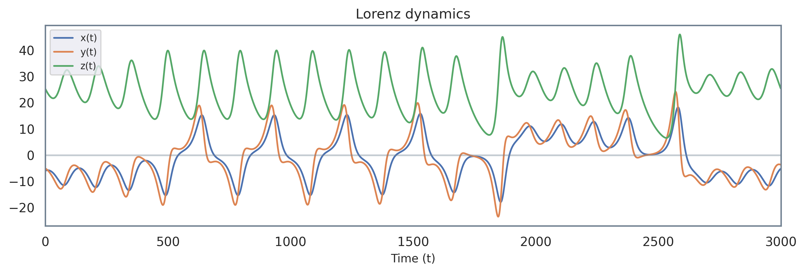
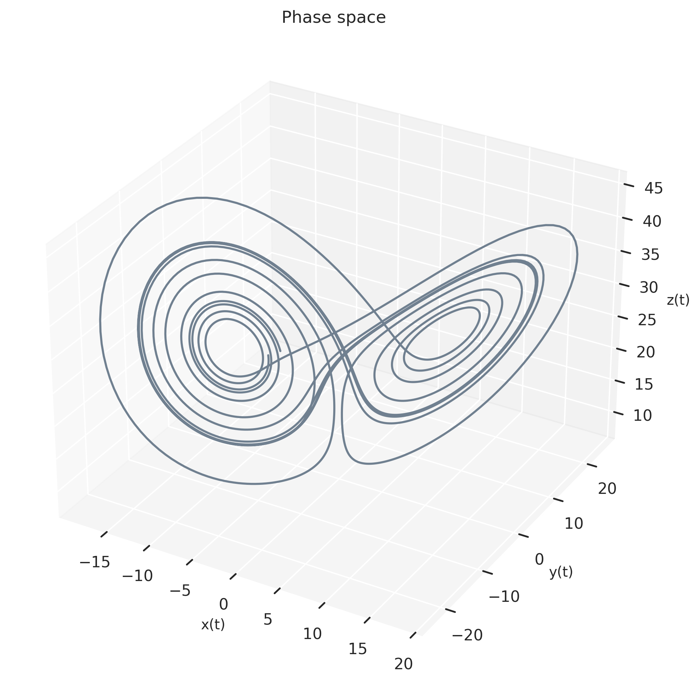
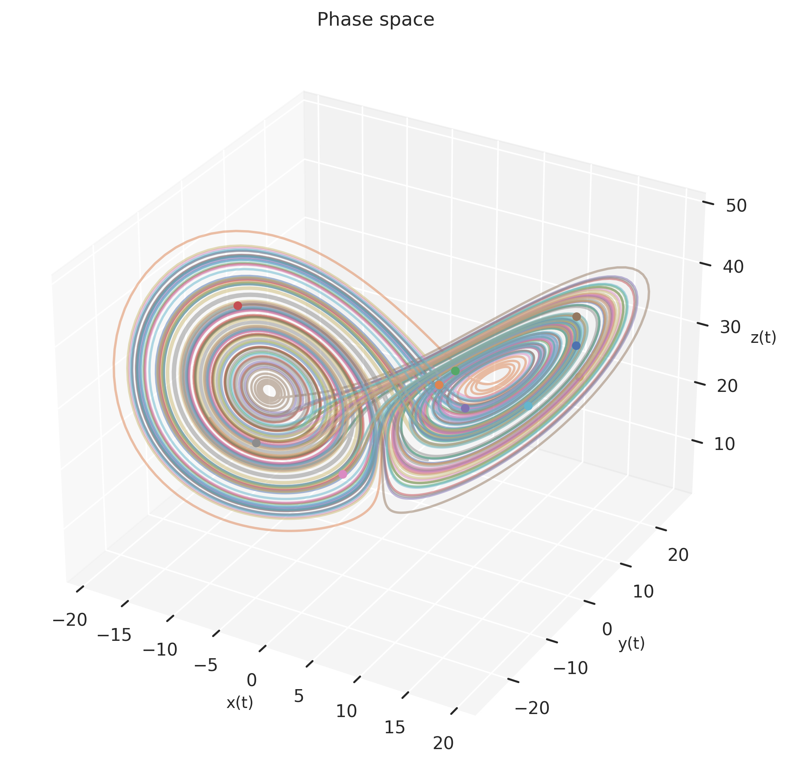
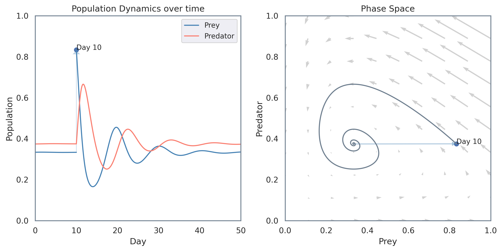
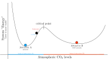
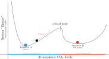

Our everyday lives revolve around well-abstracted systems that have clear cause and effect mechanisms. I flip a switch, the light turns on; the specifics of the electricity grid are irrelevant. I keep money at the bank, the bank gives me interest. I pay for supplies at the store, now I can take them home.
But when it comes to changing systems, our everyday cause and effect intuition fails us. Increasing dollars spent per child at schools doesn’t seem to improve educational outcomes. (Where does the money go?). Countries that impose travel restrictions a few days before their neighbors have exponentially lower fatalities from COVID-19. Teams whose members gel well outperform teams with more accomplished individuals, but lower team cohesion.
Linear changes produce nonlinear results. The whole is not its sum. Our intuition flies out the window.
This essay briefly explores these phenomena through the paradigm of systems thinking. Of particular interest are a class of systems called Complex Systems, which seem to evade reductionist, clean explanations. They’re complex, not because they’re complicated; it’s because even simple yet nonlinear interactions between their components give rise to rich behavior that cannot be understood in terms of any one individual factor (Meadows, 1982). Our goal here is to take a “whole systems” view of why many of these complex systems exhibit resilience to change, by examining their underlying dynamics; more specifically, their attractors.
We start by exploring attractors with the Lorenz system, then introduce causal loop diagrams as duals to differential equations, concluding with the impacts of attractors on climate change policies.
The Lorenz System
The Lorenz System is a classic set of three differential equations. It’s a useful model, as while the dynamics of the three components can be succinctly summarized in the three equations, they give rise to highly dynamic, chaotic behavior1 that is a characteristic of many real world systems. Specifically, the equations describe the evolution over time of three variables \(x\), \(y\) and \(z\) (Lorenz, 1963).
\[\begin{aligned} &\frac{\mathrm{d} x}{\mathrm{d} t}=\sigma(y-x) \\ &\frac{\mathrm{d} y}{\mathrm{d} t}=x(\rho-z)-y \\ &\frac{\mathrm{d} z}{\mathrm{d} t}=x y-\beta z \end{aligned}\]
You can think of them as representing any physical quantity of your choice (fish populations, air temperature, etc.) What’s key here is to examine how these variables interact with each other. When the system is integrated over time, we get three time series each for \((x(t), t)\), \((y(t), t)\) and \((z(t), t)\):

However, this isn’t very insightful. Alternatively, we can think of the values of all three variables for a given time \(t\) to represent a single point \((x(t), y(t), z(t))\). We can then plot these points in 3D space over different values of t, from start to end:

In doing so, we can visualize the overall dynamics of the whole system over time. It’s important enough that it has its own name: the phase space, which represents all possible states of the system (in this case, all possible values of \(x\), \(y\) and \(z\)). The visualization here reveals a pattern: The trajectory through time for the state of the system \((x, y, z)\) isn’t erratic or covering all of 3D space, but a rather limited, butterfly shaped subset.
This could very well be an anomaly; perhaps our starting condition was special. So let’s start at 10 different points, and produce 10 different trajectories:

As we see, regardless of the starting conditions \((x(t_0), y(t_0), z(t_0))\), in the Lorenz system, the trajectories converge to moving on the butterfly-shaped subset of 3D space.2 This subspace has a name: the attractor manifold.3. This convergence is true of any system with an attractor: given it runs for long enough, regardless of the initial starting point, it will become limited to moving only on the attractor manifold.
Attractors are emergent properties of a system: none of the three components in this system individually are responsible for this butterfly shaped subspace. Rather, it’s the interactions between them that give rise to the attractors. The system, as a whole, produces its own dynamics and attractors.
Attractors and Feedback Loops
Real systems have feedback loops (Meadows, 1982) which, over time tend to balance out. This leads to the system to only move around in states that are a small subset of all possible states, that is, an attractor manifold.
To illustrate this, let’s use a more grounded example: suppose there is an island of rabbits and foxes, and we’d like to model their populations. We make the following simplifying assumptions:4
- The amount of rabbits the island can support is limited at \(r_{\text{max}}\) due to limited vegetation available as food.
- Rabbits can only die from being consumed by foxes (not from natural causes).
- Foxes only eat rabbits, and nothing else.
- This is an isolated ecosystem, with the only interaction being between rabbits and foxes.
- The population of rabbits and foxes are continuous.
- The feedback is instant, that is, the population of foxes begins to adjust instantly to any change in the rabbit population, and vice versa.5
Feedback Loops
The dynamics of populations of foxes and rabbits can then be described as following.6 Importantly, both of these views describe the same underlying reality, just through different lenses.
The differential equations perspective is useful for understanding the behavior of individual components of the system (individual populations of foxes and rabbits). However, the dynamics of the whole system are not as obvious (what’s the effect of the \(r_{\text{max}}\) on the fox population?). On the other hand, what we have on the right, a causal loop diagram is clearer. We can immediately start to infer information about the system:
- More rabbits results in more foxes (positive relation). However, more foxes result in fewer rabbits (negative relation). These two relations combine to form a balancing feedback loop,7 such that the populations of both stay relatively constant. 8
If there are more rabbits than the maximum number of rabbits that can survive on the island (\(r > r_{\text{max}}\)), then the difference becomes negative. Since the difference has a positive relation with the rabbit population (but the value itself is negative!), the rabbit population declines. This decline then increases the difference back to a positive value (such that \(r < r_{\text{max}}\)).
We can even glean second-order and higher order effects from the causal loop diagram!9 For instance, more foxes has a positive relation with the difference \(r_{\text{max}} - r\). This is because more foxes result in fewer rabbits, and fewer rabbits pushes the difference toward a more positive value. (In general, two negative relations together form a positive relation, just like in ordinary arithmetic)
You can indeed verify that the predictions made by the causal loop diagram are consistent with what you’d obtain by analyzing the differential equations. For instance, one prediction (the dashed self loop from foxes to itself) is more foxes leads to less foxes (as they die off in larger numbers). This directly corresponds to the \(-\gamma f\) term in the second equation. Each of the arrows on the right correspond to terms 10 in the differential equations on the left.
These loops increase and decrease in strength, until they balance each other.11 Here, this results in a steady population of foxes and rabbits. This steady state of the system of course, is our attractor, which in this case is a single point.
It is important to note that the feedback loops never stop! Even if the overall population remains constant, the rabbits and foxes continue to undergo birth and death. The individual components of the system remain dynamic even if the overall system stays at the attractor point.
Resilience
If a system is disrupted, feedback loops will work to push the system back towards the attractor. To illustrate this, suppose on day 10 a ship full of rabbits crashes onto the island. This change is represented by the blue arrow on both the time series and phase space plots:

Even though the system is changed significantly, it ends up returning to its attractor! There’s some great dynamics going on here, so let’s put both our Differential Equations and Complex Systems lenses on and analyze this:
The Differential Equations lens
The derivatives of both rabbit and fox populations change to values with much larger magnitudes. We can see this directly on the phase plot, where the system has been pushed into a region of phase space with stronger derivatives (represented by the arrows). The population of foxes and rabbits continues to evolve according to the derivatives, until it converges back to the attractor point.
The Complex Systems lens
Due to the disruption, the feedback loops become abnormally strong, with considerably more rabbits being eaten, and foxes being born that usual. However, this change isn’t permanent, as the system is returned to its attractor point by the feedback loops balancing themselves out again. Once at the attractor, the feedback loops have returned to their “usual” values, representing the typical births and deaths in the system.
Summary
As we just saw, both differential equations and causal loop diagrams are complementary approaches. Neither is necessarily superior to, or always better than the other. Rather, both provide information about the system at different levels (differential equations at the level of individual components, causal loop diagrams at the level of the whole system) that allow us to effectively analyze the system at multiple scales at once.
Attractors in the real world
In the context of systems, both real and simulated, attractors are stability, and feedback loops are what drive them toward stability. You can push them beyond their usual states, but (within reasonable bounds) their feedback loops will drive them back to their attractors. Real systems do have some differences compared to the simplified predator-prey model above:
Non-point attractors
Many real systems do have attractors that are singular points. For instance, a pendulum has an attractor at the point of zero velocity and zero degrees from the vertical. This is because of air drag, as no matter where in the phase space of angle and velocity it starts at, it will eventually lose all velocity and end up back at zero. These attractors are easier to find, as they’re simply points where the gradient is \(0\).
However, many complex systems have attractors that are not points.12 Indeed, for many real complex systems like the human, a point attractor is effectively death. Their attractor manifolds take on the shapes of lines, curves, loops, or as is quite common with chaotic systems, even fractals (they’re called strange attractors. The attractor of the Lorenz system is one such example). This variety means that systems continue to move on the attractor manifold, with their states changing, never reaching equilibrium.
Example: Breathing
A straightforward example is that of a human breathing: our lungs don’t converge to a “equilibrium” (that’d be terrible news!), but rather cycle through the typical states (inhale in, exhale out) to produce the breathing pattern. This continues until you temporarily disrupt the pattern with an external input (say, a friend challenges you to hold your breath, so you consciously stop).
Chaotic Behavior
Real systems tend to exhibit chaotic behavior. Crucially, this is not the same as random. Chaotic means you could predict the state of the system at any future time \(t\) if you could measure the initial state to infinite decimal places (Mitchell, 2009). Unfortunately, we do not have infinite precision. And in chaotic systems, even points that start out extremely close (say, due to a small measurement error) diverge quickly13, resulting in highly erroneous predictions the further out we predict. We can still say the trajectory will remain on the attractor manifold over the long term, we just don’t know exactly where.
Example: Weather Forecasting
Chaos is why it’s challenging to predict the weather more than a few days in advance: the weather likely follows long term, deterministic dynamics, but our measurements have finite precision. Even small errors add up exponentially quickly the further out the prediction.14 Nonetheless, we can still say the weather will remain around its typical state (say, around 20°C), instead of somehow becoming 200°C.
Multiple Attractors
Real systems tend to have multiple attractors (Ott, 2006). Points in the phase space that will converge to a specific attractor are part of the attractor’s basin of attraction. You can think of the basins as partitions of the phase space. Normally, systems remain on their current attractor manifold, unless an external force pushes them into the basin of attraction of a different attractor, at which point their dynamics will take place on the new attractor manifold.

For example, even the simplified predator-prey system above actually has three attractors, with three corresponding basins of attraction.
- The first basin of attraction was the one we saw above, with the corresponding basin being all points in phase space where the population of rabbits is greater than 0. In general, this converges to \((\frac{\gamma}{\delta}, \frac{\alpha(\delta - \gamma k)}{\beta \delta})\). For the parameters we used,15 this is \((0.33, 0.38)\)
- The second basin is all points where the population of rabbits is 0, in which case the number of foxes will also become zero (because there’s no food!). This always converges to \((0, 0)\), regardless of the starting number of foxes.
- The third basin is all points where the population of foxes is 0. With no foxes, the rabbit population grows until it reaches the maximum the island can support, which is \(\frac{1}{k}\). Our attractor is \((\frac{1}{k}, 0)\), and for the parameters used this is \((1.34, 0)\).
Which attractor the system converges to depends on where it starts out at. But just as importantly, external forces can push the system from the basin of attraction of one attractor to a different one. If there’s no foxes, and we introduce one, we push the system from basin 3 to basin 1. Likewise, if there’s both foxes and rabbits, and we take every last rabbit off the island, we push the system from basin 1 to basin 2.
Systems are resilient on their own, but external forces can push them too far, at which point their dynamics change, because the basin of attraction the system is in has changed!
Multiple attractors and disruption
From the perspective of complex systems, a disruptive technology and an ecological collapse are the same thing: the system being pushed towards a new attractor. If an external force pushes a system too far, it’ll keep balancing itself until it is pushed over a critical point, which divides two basins of attraction. Once it is pushed into the new basin of attraction, different feedback loops “take over”, causing it to converge to the other attractor.
Example: climate change
With human-induced climate change, the earth still appears relatively stable, as even with increased CO2 emissions, the other components in the system (e.g. ocean acidity levels) act as counterbalances to keep the temperature stable. However, once the system is pushed too far, over the critical point, the system will fail (i.e. move to the new attractor) quickly without warning.
Indeed, one hypothesis is a 4°C rise could result in clouds thinning out (Schneider et al., 2019) (Quanta Magazine has an article here). At this point, Earth would be pushed into the basin of attraction of a new attractor, where cloud loss would result in more heat being trapped, leading to further cloud loss, and so on, forming a reinforcing feedback loop, which could add an additional 8°C for a total of 12°C increase. Humans would only need to cause the first 4°C, and Earth’s new feedback loops would cause the rest.
Example: disruptive technology
A disruptive technology pushes the present state of the market towards the basin of attraction of a different attractor. This is also why they’re so risky: until you cross the critical point dividing the new basin and the present one, the market’s dynamics work against you, pushing the market’s state back towards the status quo attractor. (Think of every new social media app, and how quickly they’re abandoned as people realize no one else is using them).
Truly disruptive technologies are able to cross the critical point, and at that point, the market’s dynamics become favorable. You effectively “cross over the mountains into a new valley”, so to speak. Smartphones have only been around for a little over a decade, and yet modern life is practically unimaginable without them: the technology has transitioned from “disruptive” to the “practically obvious”.
Humans in Complex Systems
Because real systems have multiple attractors with highly non-linear dynamics, they can act counterintuitively to what humans expect. For instance, many expect a gradual, linear increase in average global temperatures due to global warming. However, our understanding of complex systems tells us that is the opposite of what will happen, in that many components of the system will remain as they are today before everything changes, without much warning.

The resilience of systems is what makes earth habitable, by keeping long term conditions stable.16 But it simultaneously blinds us by not allowing us to see the total consequences of our actions until we cross over the critical point (because change isn’t linear), at which point we’ll be fighting against Earth’s dynamics instead of working with them.
Example: Geoengineering
As the climate crisis worsens, there has been substantial discussion on whether methods such as carbon capture and dimming the skies could be viable solutions. I think it’s important to continue to research new ways to ultimately have as many options as possible. At the same time, it’s important to note that when you mess with systems, they tend to mess back.

From a systems lens, the mere availability of such technologies will shift the critical point of the above system further right. This is because more options will increase the level of CO2 concentration we can ultimately reverse.
But CO2 concentration isn’t the correct problem! It’s the underlying dynamics of unprecedented fossil fuels consumption that is. CO2 concentrations just happen to be the visible symptom. If you’re only solving for one part of a system, instead of a broader whole, you may be very surprised by the outcome!
Returning back to the fox-rabbit island, if you increase the maximum amount of rabbits the island can support (say, permanently increase the food available) without changing the feedback loops of the system itself, the difference \(r_{\text{max}} - r\) would increase, and rabbit populations would simply grow to the new maximum the island can support.
In the case of geoengineering, the first order effect is that maximum CO2 concentration that can be reversed will increase, which is great. However, it then gets accompanied by the second order effect of humans adjusting their behavior accordingly. (Think of every time a highway is expanded, only for the number of cars to increase as well). Indeed, a possibly dangerous outcome here is a system archetype known as “shifting the burden to the intervenor” (Meadows, 2008), where we become dependent on frequent use of geoengineering to avoid ecological collapse.
Geoengineering can turn out to be a practical tool, but looking at the whole system, we must make sure its deployment is accompanied by changes to the underlying feedback loops17, such as a negative relation exerted on fossil fuel use by the plummeting costs of renewable energy sources.
We mean our technologies to do well, but technologies at the end of the day are just tools. What we really want to do, is solve problems, and we cannot do that effectively in complex systems if we fail to pay attention to second and higher order effects. Actions not only have consequences, but chains of consequences, and all those effects matter. As Hardin (1963) put it:
As concerns the basic mechanism, side-effects no more deserve the adjective “side” than does the “principal” effect. It is hard to think in terms of systems, and we eagerly warp our language to protect ourselves from the necessity of doing so. (p. 78)
Conclusion: why systems thinking?
Does systems thinking allow us to predict the future? Is it a theory of everything? No, and no:
No matter how well you model a system, our rationality is bounded, our measurements have errors, and our computers have finite power. There will always be some 10th order effect you’ll fail to take into account, and will completely mess up your predictions.18
Systems thinking is one lens to view reality through. The lenses of math, physics, chemistry, neuroscience, biology, anthropology, art and culture all have value to offer, with their own strengths and weaknesses. Systems thinking is no different: it is a paradigm, not the paradigm.
So why bother with this? It’s because factoring in even second and third order effects allows us a richer model of reality than simple first order ones. Planet-level problems become tractable, as we realize inexplicable and contradictory behavior arises from fairly simple effects working together. Systems thinking allows us access to these concepts through a new lens, a shared conceptual language of feedback loops, attractors, chaos, emergence, archetypes and so forth; simply having words for them makes them easier to reason about (Meadows, 2008).
And it’s because these effects are so common across a diverse range of systems, that we can rapidly transfer solutions from one domain to another, once we recognize them to have shared underlying dynamics. Nuclear arms races and price wars turn out to be two instantiations of the same dynamics. So does an opioid addiction and our reliance on fossil fuels.
Appreciating the full complexity of the problem then, if anything, allows us to better abstract it. System archetypes become similar to design patterns in programming: as we identify new, emerging problems as having similar dynamics to previous ones, we can quickly pull from a reference library of solutions to solve them. Systems thinking, in brief, allows us to build a better tomorrow, and I hope this essay has served as a helpful starting point.
Further Resources
Readings
Thinking in Systems: A Primer - If you want to gain a deeper understanding of systems, this book is delightful; it was the primary inspiration for this essay. Meadows is concise (it’s 185 pages!).19 Particularly illuminatory was Chapter 5: “System Traps…and Opportunities”, where Meadows discusses eight common system archetypes, and how to resolve them.
Complexity: A Guided Tour - This book is a deeper dive into complexity itself, the history of its study, and how it emerges in the natural world. There’s a more extensive focus here on computational aspects, such as cellular automata models and large-scale networks in systems.
Whole Earth Models and Systems - This is an accessible essay by Meadows that serves as a fast-paced introduction to systems thinking, particularly the archetypes mentioned above.
Seeing Whole Systems - This highly visual talk by Nicky Case contains insight on why complex systems can behave so counterintuitively.
Modeling and Mathematics
Introduction to Agent Based Modeling - This is the Santa Fe Institute’s (SFI) course on Agent Based Modeling, an approach commonly used to model complex systems from a bottom-up approach. ABMs have seen usage across a broad range of fields in recent years, from traffic control to economics.
ABM Libraries - In addition to NetLogo, which is used by SFI’s course, two other libraries are Mesa in Python, and Agents.jl in Julia. I’ll remark that the Julia library is considerably more integrated with the rest of that ecosystem, such as allowing you to use DifferentialEquations.jl for agents.
Complex Systems - More technically minded readers may enjoy this journal devoted to cellular automata and discrete dynamical systems. The lens used here is primarily that of formal mathematics.
Acknowledgements
I’m grateful to Gordon Brander, Jiaying Xu and Michael Garfield for reading early drafts, providing feedback and identifying resources to deepen my own understanding. Any resource on complex systems is, almost by definition, incomplete; nonetheless, this essay is more complete than it would be otherwise thanks to their assistance.
To help me continue to improve the clarity of my explanations, I’d appreciate if you’d consider leaving feedback here.
References
Footnotes
Under specific parameters for the equations, that is. The most commonly used ones, and the ones we use here are σ=10, β=8/3 and ρ=28.↩︎
For a visual representation, do see this, using the “large cube” option. The “hide curves” option is particularly illuminatory.
Notice how for many different random starting locations, the points (represented by butterflies) ultimately converge to moving on the attractor manifold, instead of all of 3D space.↩︎
It’s helpful to think of manifolds as “curvy objects” in a higher dimensional space. For example, a balloon is 3D object, even though it really has a 2D surface that exists in 3D space.↩︎
Explicitly listing assumptions in your models and methods is a practice I recommend. It’s easier to “debug” bad assumptions when you know what they are, as obvious as that sounds.↩︎
I’d argue this is an even more unrealistic assumption than assuming the values are continuous. Every real system has delayed feedback. Stock markets are volatile because they’re acting on past information, even from a few seconds ago. Climate policies proceed at a glacial pace since the feedback from the environment takes years.
Delay is at the core of real systems, and I’d like to cover it more extensively in the future. But for curious readers: if you’re using a top-down model like differential equations, you can use Delay Differential Equations. If you’re using a bottom-up model, Agent Based Modeling techniques are flexible enough that you can integrate delays into the ruleset of agents, such as updating each agent at random time intervals.↩︎
Some readers may recognize these differential equations as modified versions of the Lotka-Volterra equations. They indeed are!↩︎
Also called a negative feedback loop, as the two relations work in opposite directions.↩︎
The other type of feedback loop is a reinforcing feedback loop (also called a positive feedback loop), which is when two relations strengthen each other.
This can happen with either two positive relations or two negative relations. In both cases, it’s called a positive feedback loop as the two relations continually strengthen the magnitude each other’s feedback loops i.e. move in the same direction.↩︎
And this is important, as if you only look at first order effects, some dynamics can seem downright bizarre.
For example, can harsher penalties for drug possession lead to more deaths? This seems counterintuitive. However, you notice the intermediate link is drugs becoming more concentrated, increasing the risk of an overdose as well. At that point, the causal chain seems plausible if not obvious.↩︎
This can be direct, as in the case of the death of foxes being −γf. This can also be indirect depending on how we’ve written the equations (for example, the rmax − r corresponds to (1-kr) in the first equation).↩︎
To understand why this is true, remember that when the rabbit population increases, so does the foxes, driving the rabbit population back down.
Even though many systems have components with reinforcing feedback loops, all real systems are ultimately bounded overall by balancing feedback loops, because the world is finite.
(e.g. even though pandemics spread exponentially at first, they slow down as there’s only a finite number of people left to infect).↩︎
And as we’ll see below, since systems can have multiple attractors, they can have a mix of both!
For say, humans, the non-point attractor would correspond to the everyday states of being alive, whereas the point attractor would be the equilibrium state of rigor mortis.↩︎
See this for a nice illustration of the concept using the Lorenz.↩︎
This is also why I entirely ignore 10 day weather forecasts. With current technologies, we can’t even predict a hurricane more than 5 days out!↩︎
α=1, β=2, δ=1.5, γ=0.5, k=0.75. There’s nothing particularly special about these parameters, just that I wanted to produce a concrete, useful visualization instead of just neat looking algebra.↩︎
One balancing loop is the oceans absorbing CO2 and becoming more acidic as a counterbalance to more CO2 in the air. This can only go for so long before we have both the atmosphere and the ocean in jeopardy.↩︎
From the lens of causal loop diagrams, changing the loops means either:
the creation or removal of new arrows on the diagram.
changing the baseline strength of existing arrows on the diagram (before the quantities are factored in). For example, that would entail changing δ in the equations above, which governs how much the fox population increases for a small increase in the rabbit population.
I certainly couldn’t have anticipated in summer 2019 that a virus that’d be detected that December would completely upend my life three months after that. No one did!↩︎
I truly cannot exaggerate how delightful this book is. I’m rather averse to most non-fiction books (they really could just be short essays), and yet this book had me engaged start to finish.↩︎